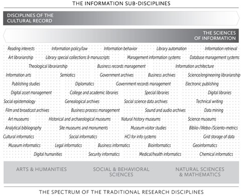
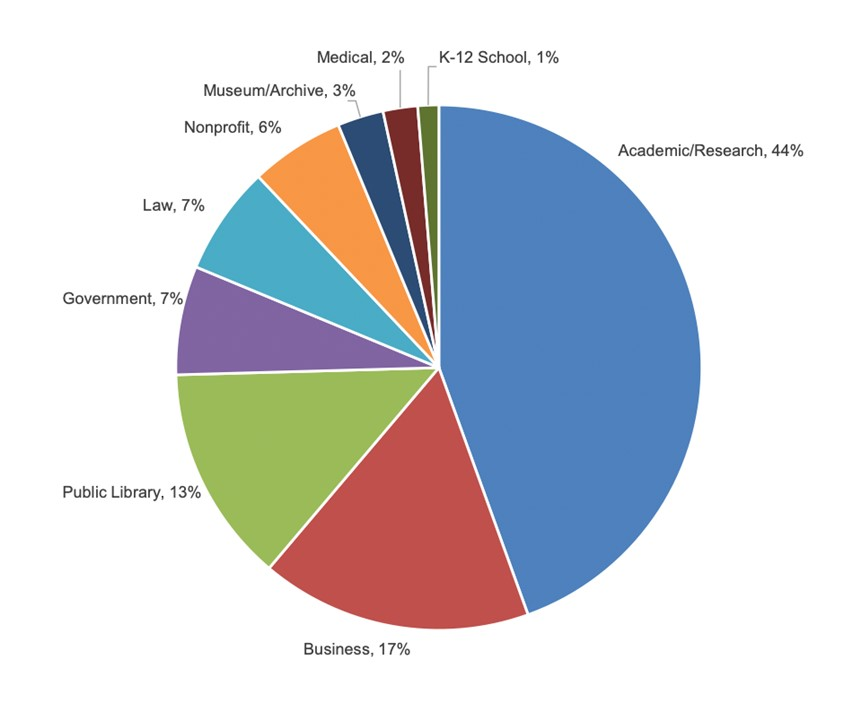
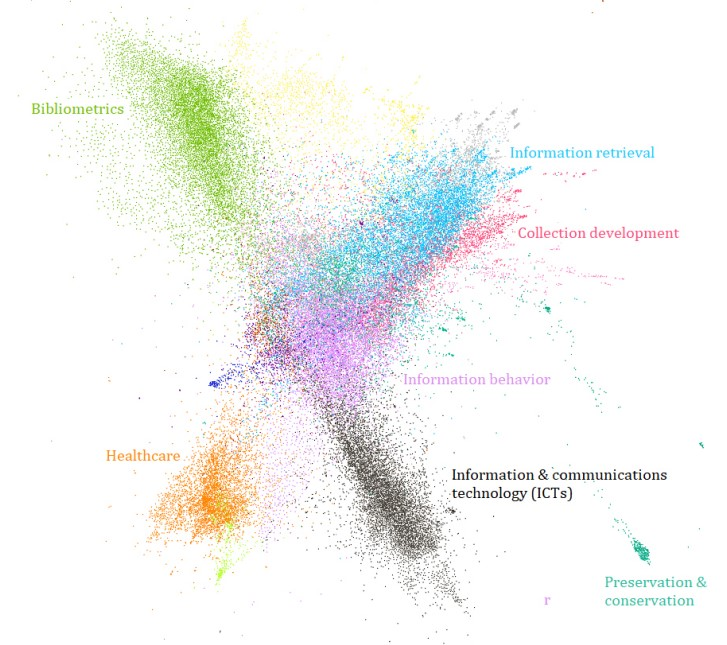

1 The information field
1.1 Learning objectives
The purpose of this introductory chapter is to provide an overview of the very diverse range of professional pathways of which your ALA-accredited information management program can lead you. As we will see in this chapter, information management degrees are about a lot more than librarianship and can provide you with many opportunities. This chapter will give you an overview of the roles than information professionals can play in various sectors and provide some resources to help you think about your own interests and development pathways.
1.2 What is the information field?
The Master of Information, like other similar programs offered in Canada and the United States, is often associated with libraries and librarianship (and rightfully so) because of its accreditation by the American Library Association (ALA). ALA-accredited degrees are generally a requirement for a range of positions in libraries of all kinds and other related organizations. Accordingly, most students reading this chapter are likely to be interested in pursuing a career in librarianship. Many of you, however, are in this program with completely different careers in mind, and you may be surprised by the emphasis on libraries. Perhaps some of you just have no prior thoughts about the program or the field as you are taking this course as an elective, or simply because you ended up here randomly. Whatever group you might find yourself in, now that you are here you might be surprised by the breadth of the discipline and the many professional pathways that it can lead you down. Who knows, maybe you joined the program to be a children services librarian, and will come out of it an aspiring data scientist? So, what are the information professions? Bates (2015) referred to our discipline as a meta-discipline that spans across the entire spectrum of traditional research disciplines, from the Arts and Humanities to the Natural Science. While it is by no means comprehensive, this figure from Bates (2015) was an attempt to illustrate the breath of the discipline by situating many of the sub-disciplines across that spectrum.

1.3 Core competencies
Regardless of the professional path you choose or the sector in which you find employment. There are a set of competencies that are core to our field. These are visible through the core competencies lists that you will find on the website of most schools offering ALA-accredited programs. Here are the MI competencies published by the School of Information Management:
Adaptation: Information managers anticipate and adapt to trends in information management, support organizational change, and promote a learning culture within the organization.
Collaboration: Information managers work effectively in teams and cultivate a culture of collaboration within the organization and build relationships with stakeholders.
Commitment to equity, diversity, inclusion, accessibility, and decolonization: Information managers practice and critique the principles of equity, diversity, inclusion, accessibility, and decolonization for participating in an inclusive and socially just society.
Communication: Information managers communicate effectively, listen actively, and are receptive to feedback and suggestions.
Digital and technological literacy: Information managers safely, responsibly, creatively, and effectively use technologies. They assess IT requirements of the organization or users and develop and implement IT strategies that support the organization’s mission.
Evidence-based practices: Information managers promote evidence-based decision making and policies. They use adequate methods to produce, assess, synthesize, evaluate knowledge to support the organization’s activities.
Leadership: Information managers advocate the strategic importance of information for their organization or community, promote the professional values of the field, support the development of their peers, and mobilize people and resources towards the achievement of collective goals.
Learning: Information managers are reflexive, life-long learners who adopt a creative and innovative approach to their work.
Management:Informationmanagers effectively manage projects, people and resources, and ensure that the information assets and practices of the organization support its values, mission and objectives.
User-centered design: Information Managers engage users and adapt services to their information needs and behaviours.
1.4 Roles, values and principles
The information professions fulfill a wide range of societal and organizational roles. All organizations have produce and need information to support their operations, by collecting and organizing data, documents, and archives, and managing information systems that support the day to day activities of organizations. Information professionals also have an educational role, by providing data, information literacy, and information technology training to patrons in public libraries, students, and colleagues in any type of work environment, and by gathering and organizing teaching materials to support educators. Information professionals also play an important role in supporting research in academic, governmental, non-profit, and corporate settings. Information professionals can also play a key role in fulfilling the culture and entertainment mission of organizations such as public libraries and museums.
“Because of differences in goals and in the basic principles that underlie the various disciplines represented in the information profession, it is difficult, if not impossible, to express a single set of values across the information professions.” (Koehler, 2003, p. 109)
Still there is a core set of values that exists within our field and tend to be promoted in our programs, and professional associations. The following are examples of core values in the information profession, adapted from Gorman (2015). These values may reflect the historical focus of the field (and of Goman’s book) on libraries, but they are also broad principles that can be relevant and applied in a wide range fo professional settings.
Stewardship
Gathering, organizing, preserving information for future useService
Being of service to our users, colleagues, and communitiesIntellectual freedom
Protecting the right of people to hold, share and access ideas without restrictionsEquity, diversity, and inclusion
Ensuring that every individual and groups have access to information, can participate in the production of information, and be adequately represented in information.Privacy protecting the privacy of individuals and activities
Literacy and learning
Promoting reading and lifelong learning.Democracy
Supporting democracy and democratic principles.Social responsibility
Working to make the world a better place.
Think about some of the type of work and organization that interests you as a future information professional.
Can you think of ways in which the roles, values and principles listed would apply to that setting?
Are there roles or values that are not relevant in this context?
Are there others values or roles that you can mobilize as an information expert in this context?
1.5 Employment sectors
Now let’s dig deeper into some of the directions that this degree can take you. In the following section we will provide a deeper overview of different sectors within information management. You can learn more about the different roles, job duties you may encounter and the skills you will need to be successful. There is also more information on the professional values of each sector and the professional associations that you may be able to join.
The pie chart presented in Figure 3 is based on an survey of the field in the United States (MLIS Skills at Work, 2022), but it still shows how important the library sector remains in terms of career opportunities for information management graduates, while also highlighting the diversity of sectors in which you may end up finding employment.

In the rest of the chapter, we look more closely at some of the areas in which you might end up working as an information professional. For each, we provide some information on the typical jobs and the specific skills that may be valuable, as well as other information resources such as the websites of professional associations. We also introduce some information professionals that were interviewed by Janine McGregor, second year MI student, during summer 2022.
1.6 Public libraries
Some job duties you might encounter while working in a public library include programming, organizing the collection, building community partnerships, answering information requests, providing information literacy training, preparing library budgets and conducting needs analyses.
Some skills that may be necessary should you wish to work in public librarianship include supervisory experience, computer literacy, competency with intranet content management and document management using software, ability to work well with the public, project management and knowledge of the trends in library service design (MLIS skills at work). Of course, these skills are not all required and you can learn some on the job, but you should look to take courses and internships that help to improve these skills.
There are many professional associations for you to check out if you are interested in public libraries, such as the Public Library Association (a division of the American Library Association), the Nova Scotia Library Association (free membership for students).
Dyan Bader
Manager
Systems & Collections Access Nova Scotia Provincial Library
As the manager of systems and collections access for the Nova Scotia Provincial Library, Dyan works with all the public libraries outside of Halifax, which are grouped in eight regional libraries. Her team manages the back-end systems that these libraries use every day including the integrated library system, their discovery layer, and their digital lending platform. In the past, each regional library region made their own decisions related to the integrated library system, but during the last five years, Dyan and her team worked with the 8 regional libraries to integrate these into a single system called “Same Page.” The new system launched in April 2022 and expands access to almost 1,000,000 resources for patrons throughout Nova Scotia. With the new system Dyan’s team must work together with the different regions to ensure there is consensus on all decisions that impact the system. These large projects require a lot of planning and coordination to ensure that the best decisions are made, since they directly affect libraries across the province. Most of Dyan’s time is spent in meetings and writing documents.
The Nova Scotia Provincial library is part of the provincial government and supports regional libraries in several ways, either as a leader, a partner, or a service provider. This brings a lot of variety to Dyan’s work since her projects and tasks are driven by these different roles.
There are certain skills that would be beneficial to those looking to work in a similar role. Project management is huge, as well as problem solving, facilitation and time management. Leadership is something that you will learn along the way.
One piece of advice that Dyan would give to students is to focus on what you are passionate about. For her, it was an interest in technology and cataloguing. Try your best to stick to those things and hopefully you will end up in positions that allow you to explore these passions. Dyan was lucky to have employers who supported her training goals, allowing her to complete an advanced certificate in digital services as well as a Masters certificate in project management.
Some of your first jobs can really shape your career. She also suggests being open to taking jobs in less urban areas as you are often able to gain skills in these positions that wouldn’t necessarily be possible in a larger library. A lot of times when you enter a larger or more structured environment you can be hemmed in by your job description, and the position won’t have the flexibility that allows you to evolve quickly. Dyan’s first job after graduation was as a director of a small community college library in Southern California. Upon starting she soon realized that she would need to completely replace the integrated library system and re-catalogue the entire library. Running this huge project gave her the experience she needed to move forward in her career and to understand her own abilities.
Jeff Mercer
Deputy Chief Librarian
South Shore Public Libraries
As the deputy chief librarian of a small system of libraries, Jeff is responsible for many different things. He is in charge of PR and promotions as well as community outreach including volunteer services. He oversees all of the programming at each branch as well as IT and systems support or development. Jeff also oversees policy and procedure review and revision and has some input on collections development. In terms of staffing Jeff deals with hiring, performance evaluation, goal setting, training and occasionally scheduling.
There are two main sides to this position; the public side and the staff side. When working with the public, Jeff’s job is to say yes as much as possible to patron’s requests. Jeff must also help his staff to be successful in their positions.
If looking to work in a similar role it’s important that one has time management skills and people skills. In this position there are a lot of competing demands on your time such as meetings, staff support, research and workshops. People skills can be gained through working with the public in different service roles such as restaurants or retail stores. It’s important to be able to recognize that people all have different communication styles and people may not interpret what you say in the way you mean for them to.
While you are still in school it’s important to take advantage of student opportunities such as joining professional organizations. Make sure to take any opportunity to learn from working professionals. Jeff mentioned that there are certain courses within an MI degree that would be very useful for this job. Community led services was one of them, as it’s important to respond to your community’s needs appropriately. He also mentioned courses on readers’ advisory since the collection goes hand in hand with services. A library’s collection needs to reflect the broader trends in society. You want a fresh young collection that is responsive to what people are looking for.
The best advice Jeff would give is to go to any conferences, workshops or other professional development opportunities you can. It’s not just about what you will learn but also about who you will meet and what they can teach you. Along the way you’ll gain insight that will be useful in your future career. He also suggests that you shouldn’t say no to any opportunities. His first job gave him the skills he needed to obtain the job he has now. He also believes that it’s important to listen if your gut is telling you that your current direction isn’t right for you, you shouldn’t stay in a job that you don’t enjoy because you can always change direction.
1.7 Archives
Working in archives is a very common path for people taking an MI degree. Archivists may work in all sorts of organizations including corporations, universities, or non-profits. Some roles they may take on include archival specialist, creative arts archivist, archives project associate or archives and special collections librarian.
While archives and libraries have many points in common, they are also very different and are clearly distinct professional fields. Archival records are very different than
The School of Information Management offers several archives courses and a an archives certificate that you can complete as part of your MI degree. There are also practicum and internship opportunities available for you to gain experience.
Some job duties one may encounter working in archives include preserving and providing access to historical records, developing an archival digitization program, and promoting the use of collection to the public. To get more information about the archives field, you can check out the websites of the Association of Canadian Archivists, the Canadian Council of Archives, and the Council of Nova Scotia Archives.
Sharon Murray
Archives Advisor
Council of Nova Scotia Archives
Although Sharon does not hold an MI degree, the job she has is very relevant to people within the program and her knowledge of the profession is vast. Before working in her current position, Sharon worked directly in the archives digitizing items for improved access. She was very systematically processing the photographic records at the archives she worked in and creating databases to store them in. She was also required to label, re-shelve and store items. She created web exhibits and research guides for improved public access. Her path to archives was not a straight one. She originally picked up archives work as a side job to improve her research. After returning to Nova Scotia, she picked up more substantial work in the archives and began to pivot as she felt that the archives were a very fulfilling fit for her skills, experiences and interests. She found that it was eye opening to see how much impact archival records can have on the public when true meaningful access is provided. While in this role she digitized several thousand photographs. Her and her colleagues had a lot of discussions about storage and access.
Sharon’s current role with the Council of Nova Scotia Archives is much different. The CNSA is the professional association for archives and archivists in Nova Scotia. The purpose of the organization is to provide support, education and advocacy for those in the profession. In Nova Scotia there are around 75 archives that are members which range vastly in size and resources from small volunteer run archives to larger ones with multiple permanent paid staff. The CNSA offers a suite of courses, workshops and training opportunities to help members develop the essential knowledge and skills needed to manage their archive. Sharon teaches the bulk of the courses offered with 50% of her role offering advisory services. Due to this, she must keep on top of the current discussions and needs within the profession so that she can ensure that the knowledge she is conveying is current.
Sharon describes the two most important skills in the archives profession currently as a background in Equity Diversity and Inclusion (EDI) as well as knowledge of digital preservation and access. The profession is currently at a turning point in which they are acknowledging their role in silencing the stories and voices of Indigenous peoples in Canada. Archivists want to ensure that going forward they are doing the right thing by endeavoring to preserve records, stories and information about all people. The second turning point she described was the digital turn. As a profession they are heading into brave new territory where it isn’t paper based records but digital content that must be preserved. There will be a lot more digital born content which will require digital infrastructure to be built. It is also important for archivists to have relational skills, meaning a desire to build relationships and connect communities. Archive work is becoming more service oriented.
The best advice that Sharon would give to students is to build relationships with people working in the field as it will help you to understand the realities of the profession. It will also help you understand what you have to offer and how your skills and strengths might be useful to the community. She also suggests looking outside of Halifax for summer work positions as a lot of these small organizations are looking for help. You will get the opportunity to work on many different aspects of the archive and will likely learn a lot about community building.
1.8 Museums
Museums also often have libraries and archives that can be open to the public (increasingly so with collections being digitized and made available on the web). Depending on the type of museum, these libraries and archives can be part of the collections, or exist to support the museums activities. For example, a good exhibit might rely on having done research on the topic and its social or historical context, or on specific items that are part of the exhibit. Then you can think of museums as just another type of organization where librarian or archivists are needed.
Another key role for information professionals in museums involves dealing with information systems and users. Museums increasingly have online collections and databases to support them. These require a set of competencies and skills, such as database management, organization of information, and user-centered web design, that you will be able to develop during your MI degree.
More generally, the close relationship between the information and museum fields may be blurry enough that your information degree could help you compete for any type of museum role. especially if you have a background in the arts and humanities, or another area that is relevant for a particular museum.
To get a better sence of the jobs available in the museum space, check out the Canadian Museums Association (https://museums.ca/) and their job board.
1.9 Academic libraries
There are many different roles that one can have within an academic library. These include but are not limited to access and reference services librarian, outreach and diversity librarian, materials and image librarian, and staff engagement liaison. Some key service roles include reference assistance, assisting faculty in research and teaching research, delivering courses on research, creating LibGuides, helping to select which journals to purchase, analyzing usage statistics and outreach and marketing.
If you are interested in academic libraries, a good place to start exploring maybe the Dalhousie Libraries website. You probably used similar website before to search for resources, but checking out the services pages and the about us pages might help you grasp the broad ranges of services that academic libraries offer. You should also check out the the Canadian Association of Research Libraries (CARL) and the Canadian Association of Professional Academic Librarians (CAPAL)
1.10 Law
There are many different job titles that an information manager may have when working in law. Examples of these include law practice and technology librarian and instructional law librarian. Some people choose to acquire a law degree along with their information degree to further their skills. Some job duties you may have working in legal librarianship include assisting the law community in finding and evaluating information, developing instructional programs on legal technologies, teaching law courses, and monitoring vendor communication for new titles.
Common skills that employers search for in legal librarianship include exceptional client service, discretion when dealing with confidential information, knowledge of online legal research platforms, experience working on projects related to digitization, project management and teaching. You can tailor your courses to these skills while in school and find ways to use what you have learned in your interviews upon graduation (MLIS skills at work, 2022).
The School of Information Management offers a course on legal librarianship (INFO 6320 Legal Literature and Librarianship), which is part of the Librarianship Certificate.
1.11 Health
Your information management degree can lead to a range of careers in the health sectors, with job titles such as medical content reference librarian, medical research librarian, or a health sciences librarian. Check out the websites of the Canadian Health Libraries Association and the Medical Library Association for more insights into that area of the field.
The School of Information Management offers a course on legal librarianship (INFO 6320 Legal Literature and Librarianship), which is also part of the Librarianship Certificate.
Health and law librarianship are sometimes put into the broader special libraries category, along side most libraries that operate in highly specialized settings in the public, non-profit and corporate sectors. Check out the Canadian chapter of the Special Library Association (SLA) to get to know more about special libraries.
You might be surprised about finding libraries and librarians (sometimes under different labels) in organizations like the Canadian Space Agency, the Cirque du Soleil, the Montreal botanical garden
1.12 Data management and data science
There are so many different jobs in the data management field. Some sample job titles include Data analytics manager, data librarian, data visualization and GIS specialist, and manager of data governance. Some duties you may encounter within these roles include leading a university library’s research data services initiative, partnering with researchers to advance the knowledge and management of data, or answering questions on data management for faculty and staff at a university (MLIS skills at work, 2022).
If you are passionate or curious about data, consider tailoring your courses to working with data. Courses such as data science and data management will help you to learn the skills you need to succeed.
With the world shifting towards more online content, digitization is becoming more and more important making digital librarianship is a worthwhile field of librarianship to pursue. Digital librarianship can have many different job titles including digital collections manager, electronic resources librarian, virtual resources librarian or digital and automated services librarian. When working in digital librarianship you may find yourself supervising activities related to the digitization of collections, providing consultation and technical support for the development of technology reliant research projects or engaging in the assessment, maintenance and enhancement of digital collections and services.
Skills If you are interested in digital librarianship, it could be helpful to take extra advanced technology courses during your degree. This will help you to gain the skills you need for the field such as ability to learn new technologies quickly, experience with metadata, knowledge of digitization standards and an interest in electronic information sources and organizations.
Stephanie Bilodeau
Manager, Open Government and Data Governance
Royal Canadian Mounted Police – IM/IT Program
Stephanie wears two hats with her job at the RCMP, she is the manager of Open Government and the manager of Data Governance. There is a big need for these positions because programmers created systems to store data but more needs to be done to organize and manage that data. They have found that when using these systems things aren’t accurate, queries are not always pulling up the right data. There is also bias in the systems depending on who entered the data. Some systems have way too much data as it hasn’t been managed or disposed of or cleaned in years creating issues of privacy. This is where data governance comes into play. It is Stephanie’s job to govern how the data is entered, how the data is utilized and how it is managed.
Stephanie provides service to clients. Her department serves all the employees of the department helping them organize, collect, store, preserve, secure and dispose of information. She also must write policy instruments including standards, guidelines, procedures, and processes for managing information. She must establish governance and facilitate decision making with those that have authority and responsibility in regards to the data and/or information. As a manager, Stephanie manages the office, the employees, the workload, the scheduling of work, and delegation of work. Open government is concerned with publishing information that would be in the public interest in an effort to be transparent. There is a lot of work to do in this regard, including making sure that information is protected, and publishing information that is relevant. In an effort to enhance democracy all citizens should be able to participate in these discussions.
If you would like to work in a similar position it is important that you are a people person. The job requires you to meet with clients, partners and collaborators and to work with people to help enhance their experience of working with information. This is a position in which you would rarely work alone. You need to be organized and technologically savvy. This position is incredibly tech focused so it’s important to know how information is managed through IT systems. You must be adaptable as the role changes and open minded to different cultures, languages, and personalities. You must also be bilingual, speaking both French and English.
The Federal Student Work Experience Program is a database for hiring students through the Government of Canada. Stephanie suggests you put your resume in as you may be hired to a government position. They offer full time positions during the summer with flexible hours during the school year. They also have the ability to bridge students into permanent positions after they graduate.
https://www.canada.ca/en/treasury-board-secretariat/services/pay/rates-pay/student-employment-programs-federal-government/federal-student-work-experience-program.html
The best advice Stephanie would give is to be open minded and willing to learn constantly. Always try new things and make sure that the work you are doing is aligned with your organizations’ mission and corporate vision.
1.13 Knowledge management
Knowledge managers can work in a variety of sectors including non-profits, government or corporations. Some of the roles that fall under knowledge management include knowledge synthesizer, knowledge analyst, knowledge navigator and of course knowledge manager. Some of the main duties you may encounter within this field are handling a company’s knowledge management operations, formulating a knowledge management strategy, managing knowledge management staff and influencing change within an organization. Tasks you may be asked to perform include curating technical website content, designing and implementing effective learning activities and managing knowledge sharing events (Postolache, 2019). Skills If you are looking to become a knowledge manager it is possible to obtain a knowledge management certificate on top of your degree to increase your chances of employment (Postolache, 2019).
Trecia enrolled in the MLIS program at McGill University and specialized in knowledge management to learn how to best share knowledge. During her program, she completed an internship with Rio Tinto Alcan in their business information center, and she learned that efficient knowledge sharing strategies rely on a good understanding of your audience. Knowledge management work often involves doing research to fulfill specific needs and you must constantly re-evaluate to make sure that the collected resources are useful for the people in the organization who are using them.
Trecia is now a community services librarian managing the Stellarton and Trenton Public Libraries, and the Books-by-Mail service. Her job involves public relations and communications, outreach, and programming. One of her main focuses is community led programming, which involves working with the staff in each location to plan programming that best fits their communities’ needs. She finds that programming works best when there is a commitment from the community to participate. Community led programming begins with conversations with patrons to try to determine what programs they would like to see. This is the key to building responsive public library services.
According to Trecia, a lot of important skills are required of a successful community services librarian. Communication is important, especially formal communication, everything from social media etiquette to doing media press releases. You need to be able to speak with media outlets as a representative of the library at public tables. Management and leadership skills are also necessary along with time management, project management and knowledge management. Public speaking skills are necessary as you would be giving presentations and teaching staff, as well as running public workshops and programs. Experience with research and report writing is also an asset.
To set yourself up for success in this field during your degree, Trecia suggests looking into how the interests of the faculty members in your program may align with yours. This can lead to research work opportunities. She also recommends considering how your background and experiences can be mobilized into your career in information, the strengths you can bring forward and how the information degree will complement these strengths. The information field is broad and offers many opportunities, so Trecia suggests that you try to take on projects that are meaningful and that you can connect to your interests.
1.14 Information as a research field
The information field is not just a set diverse set of competencies and career pathways. It is also a research discipline with its own peer-reviewed journals, scholarly societies, and conferences. The field has many names that have grown or declined in popularity over the years such as library science, library studies, information science, information studies, library and information science. As figure 1 at the beginning of the chapter highlighted, the field is also not a monolith; it is composed of a wide range of research areas from arts and humanities to natural sciences. If you were to retrieve all the Library and Information Science research in the Web of Science and visualize it in a citation network, it would probably look like this figure (Mongeon et al., 2021):

If you want to know more about research in the field, check out the profiles of SIM faculty members. You can also check out the Association for Information Science and Technology (ASIST) and the Canadian Association for Information Science. (CAIS)